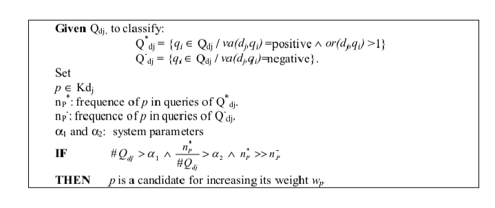
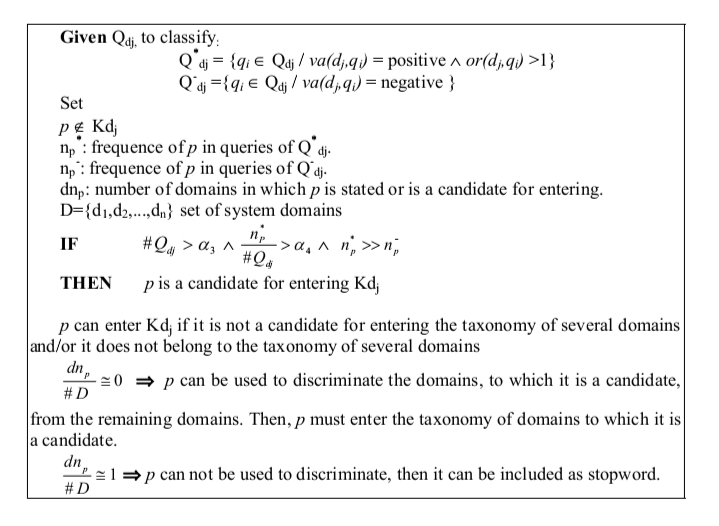
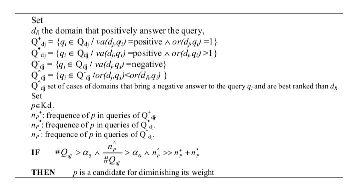
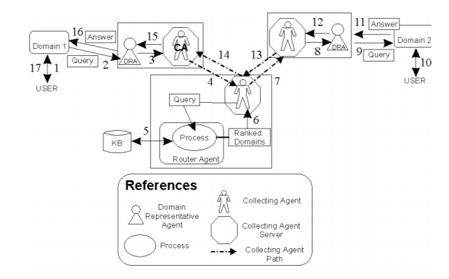

<html>
<head>
    <title>Project1</title>
    <link href="style.css" rel="stylesheet">
    </head>
    <body>
        <div class="data">
        <p>Once qi ∈ Qdj cases are classified into one of the four defined groups, the purpose is
to infer rules to update the discriminating function of each domain that is stored in the
knowledge base. The action of these rules will be to:</p>
            <p>– Modify the cases belonging to Q+
dj to the lowest extent.
</p>
            <p>–Determine the weights wpk of the keywords (predicting variable) of the domain
taxonomy. These weights must be increased in order to correct the classification
error produced in the cases of group Q*
dj. These rules will operate on keywords pk ∈ Kdj
 that are frequently present in queries qi ∈ Q*
dj, since it can be inferred that
these predicting variables are more important to classify domains than what their
associated weights really reflect. In other words, the current weight factors wpk are
low.</p>
            <p>– Encourage the incoming of new keywords into the domain taxonomy. This means
including new predicting variables in the discriminating function of domain dj.
These rules will operate on keywords p’k ∉ Kdj
 that are frequently present in
queries qi ∈ Q*
dj. In other words, it is inferred that these predicting variables are
important to classify domains. However, if those words are also frequently present
in queries answered by most of the remaining domains, these keywords would not
be useful to distinguish among domains and thus they should not be incorporated.</p>
            <p>– Another possibility is that a domain presents many cases in which it answered in
a negative form although appearing as better positioned in the ranking than the
domain that actually provided a positive answer. This means that this domain
taxonomy has words whose weights are too high when compared to their importance in the domain. Therefore, there should be a rule that diminishes the weights
of these words.</p>
            <p>With the aim of interpreting the relationships among variables, we present three
main rules obtained by the mining process that will be used to develop the system
learning process:</p>
            
            <p>In the condition of this rule, we are saying that a word belonging to the domain
taxonomy is a candidate for increasing its weight if:</p>
            <p>a) more than α1
 cases are stored in Qdj and
<p>b) the number of times in which p is stated in queries of Q*
dj is greater than α2</p>
 and
<p>c) np
* is much more higher than np-</p>
            <p>Now, we present the rule for the incoming of new words into the domain taxonomy.</p>
            
            <p>In the first condition of this rule, we say that a word is a candidate for entering a
Kdj
 if:</p>
            <p>a) more than α3
 cases are stored in Qdj and</p>
            <p>b) the proportion between the number of times in which p is stated in queries of Q*
dj in
respect to the number of cases stored in Qdj is greater than α4.</p>
            <p>c) np*
 is much higher than np-.</p>
            <p>A word can enter Kdj
 if the amount of domains in the system is much higher than
the quantity of domains in which p is stated or is a candidate.</p>
            
            <p>In the condition of this rule, we are saying that a word p is a candidate for diminishing
                its weight if:</p>
            <p>a) more than α5
 cases are stored in Qdj and</p>
            <p>b) the proportion of the number of times in which p is stored in queries of Q∧
dj in respect
to the number of stored cases Qdj is greater than α6
 and</p>
            <p>c) np∧ is much greater than the number of times in which p is stated in queries with positive
answer (np+
 + np*)</p>
            <p style="font-size: 16px;"><b>MULTIAGENT-BASED ARCHITECTURE FOR
THE DYNAMIC DSS</b></p>
            <p>According to what has been described in the previous sections, we may distinguish
various activities that must be carried out during the dynamic DSS operation. This system
should work in the following way.</p>
            <p>When an enterprise domain requires some information, a user of that domain gets
into the dynamic DSS and formulates a query in natural language. The system interprets
that query, compares the contents of the query with its knowledge about the type of
information each domain can provide, and identifies the domains to which the information requirement must be derived. Then, the system communicates with this domain and
waits for an answer. In case it does not obtain a positive answer, it communicates with
the other domains. Once the pursued answer is obtained, this is transferred to the domain
of origin and, if necessary, the knowledge updating is also done.</p>
            <p>A system that operates in the described way can be implemented using the mobile
agent technology (Rus, Gray, & Kots, 1998).
An agent is a software component that performs specific tasks in an autonomous,
intelligent, and collaborative way in order to achieve its design objectives. Two classes
of agents may be identified: static agents, which stay in their respective computers; and
mobile agents, which are able to migrate among different locations of the network in order
to perform their tasks locally.
A multiagent system consists of a set of software agents, each performing a specific
activity but behaving as an organization, i.e., in a coordinated way. The main activities
this system must perform are:</p>
            <p>• transferring queries to different domains of the system;
<p>• communicating with domains (either for capturing the query or answer or for
delivering the answer or information requirement); and</p>
<p>• identifying the domains able to provide an answer.</p>
            <p>Each of these activities requires a different type of software agent. A multiagent
architecture for this dynamic DSS should be made up of three main kinds of software
agents:</p>
            <p>a) Collecting Agents: mobile agents that visit the different domains to find out which
of them can give the appropriate answer.</p>
            <p>b) Domain Representative Agents: static agents that act as mediators between a
domain and the mobile agents. They send the queries coming from users of the
domain to the collecting agents and also transmit the answers to queries of the
mobile agents that arrive asking for information.</p>
            <p>c) Router Agent: an intelligent agent, which, interpreting the query, decides where the
collecting agents should look for the answer. It is an agent that centralizes the
knowledge about the system and whose main responsibility is the system efficiency. It owns the system knowledge base that stores each domain taxonomy and
the associated weight factors. The router agent calculates the value of the
discriminating function for each domain whenever an information requirement is
presented to the system. It is also responsible for updating that knowledge base.
In other words, the router agent performs the learning process, and thus it is
responsible for managing the cases base.</p>
            <p>Figure 1 is a schematic representation of the multiagent architecture for the dynamic
DSS</p>
            <p>This multiagent system, as depicted in Figure 1, works as follows:</p>
            <p>When a decision-maker needs specific information, the former, being helped by an
assistant, expresses the information he/she would like to receive (1). Then, the assistant
passes it to the Domain Representative Agent (2), which changes the query into a format
accepted by the mobile agents and sends it to the Collecting Agent Server (3). The
Collecting Agent Server gives the query to a domain Collecting Agent, and it goes to a
special agent server—the Router Agent (4). It receives the Collecting Agent that has just
left its domain, reads the formulated query, filters it, and according to the information kept
in its knowledge base (5), it computes the discriminating function of each domain and
gives the Collecting Agent a ranked list of domains that would provide the searched</p>
            <p>Figure 1: Multiagent architecture for the dynamic DSS.</p>
            
            <p></p>
            
information (6). The Collecting Agent visits these domains with its query (7). Once it has
found the answer and is about to go back to the original domain (8-12), it visits the Router
Agent again to inform it of the obtained results, allowing it to have new information to
update its knowledge base for future queries (13). That information is stored in the cases
base to be used in the learning process. Finally, the Collecting Agent goes back to its
domain, delivers the information and destroys itself (14-17).
          
        <p style="font-size: 16px;"><b>CONCLUSIONS</b></p>
        <p> information requirements they cannot satisfy, must be able to identify the relationship among the characteristics of consults and domains. By using data-mining techniques it was possible to define a discriminating function to classify the system domains
into two groups: those that can probably provide an answer to the information requirement made to the system, and those that can not do that. From this discriminating
function, the system knowledge base was designed, which stores the values of the
parameters required by such a function.
On the other hand, the system needs to learn from the errors it could make during
its operation so that it can decrease the number of consulted domains in each information
requirement presented to the system. The use of data mining allowed the definition of
a data structure that is convenient for analyzing the system operation results and,
according to that, for designing a cases base to store the information associated to the
quality of each performed search.</p>
              </div>
    </body>
</html>